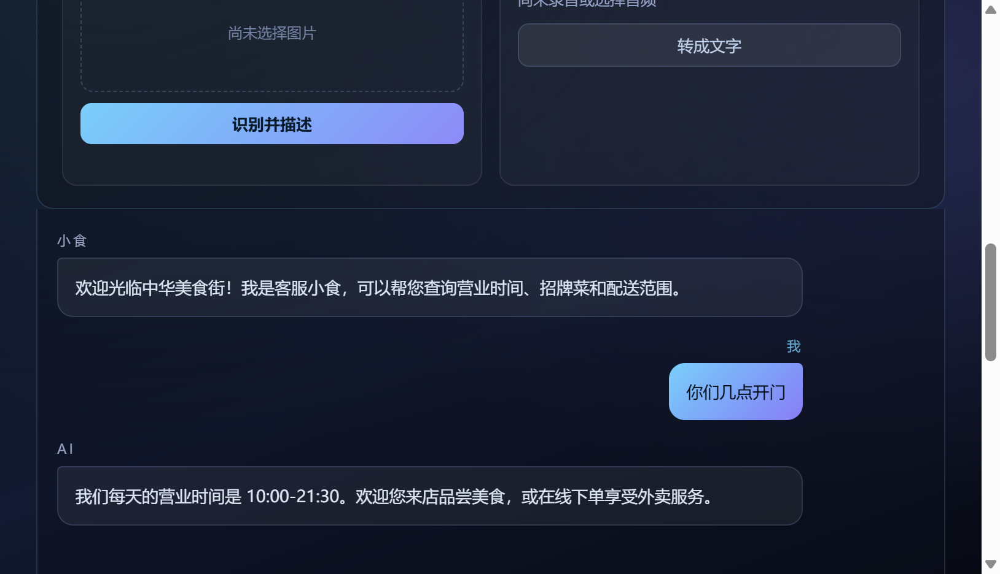
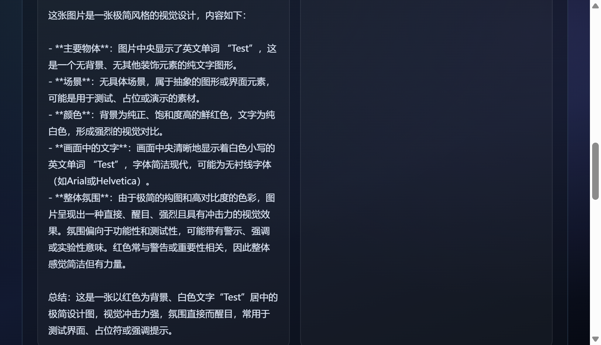
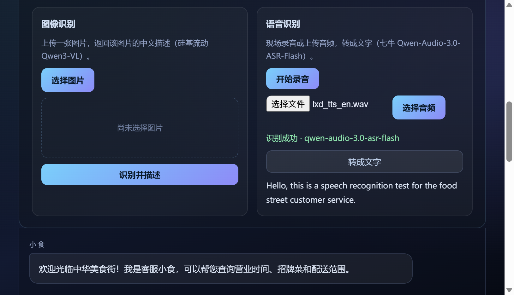

多 模 态 A I 应 用 · 操 作 流 程
本页按真实操作顺序记录：启动服务 → AI 客服对话 → 图像识别 → 语音识别。 每一步都附本人实测截图与预期结果，照着做即可复现。
动手前必须明白
三个功能都走同一条链路，只是后端接口不同：对话走 /api/ai/chat，
图像识别走 /api/ai/vision，
语音识别走 /api/ai/asr。
backend/.env，浏览器只请求本站接口，由后端带 Key 转发。
所有功能的前提
backend/.env 里的数据库与两个平台的 Key 已填好。.env 必须重启后端才生效；页面更新后按 Ctrl + F5 强制刷新，避免读到缓存里的旧脚本。
文本输入 → 多轮对话 → 客服人设
[KB] 发送给大模型的数据 与 接收自大模型的数据。
实测：提问「你们几点开门」，回答「我们每天的营业时间是 10:00-21:30…」
上传图片 → 返回该图片的中文描述
Qwen/Qwen3-VL-8B-Instruct。
实测：上传测试图后，模型返回对画面主体、颜色、文字与整体氛围的完整描述
POST /api/ai/vision；后端转为 OpenAI 兼容的 image_url 多模态消息，再用已有的硅基流动 Key 请求视觉模型。
录音或上传音频 → 输出文字
qwen-audio-3.0-asr-flash。
实测：上传一段英文语音，返回「Hello, this is a speech recognition test for the food street customer service.」
先看现象再改代码
| 现象 | 原因 | 解决 |
|---|---|---|
| 页面提示「请求失败，请确认后端已在 8311 端口启动」 | 后端没启动，或用 file:// 直接打开了 html | 启动后端，并改用 http://localhost:8311/ai-chat.html |
| 点「开始录音」没反应 | 浏览器未授权麦克风，或非 localhost 环境 | 在地址栏左侧允许麦克风权限，或改用「选择音频」 |
| 图像识别提示「图片过大」 | 图片超过 8MB | 压缩图片后再上传 |
| 图像识别提示尺寸不合法 | 图片宽或高小于 28px | 换一张正常尺寸的图片 |
| 语音识别返回 429 | 免费模型触发限流 | 后端会自动重试，稍等再点一次 |
| 语音识别提示「没有识别到有效语音」 | 录音太短、静音或声音过小 | 靠近麦克风重新录一段 2 秒以上的语音 |
| 刷新后还是旧界面 | 浏览器缓存了旧 css / js | 按 Ctrl + F5 强制刷新 |
逐项打勾即可交作业